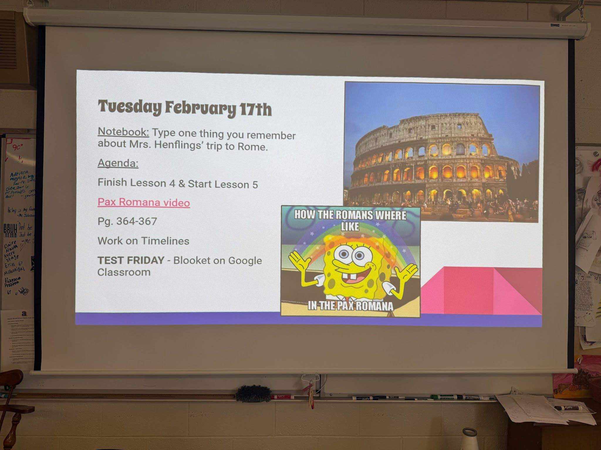

In my classroom, our daily agenda slide, as shown above, always displays the expectations in that moment (responding to the notebook question), expectations for the hour (the daily agenda), and finally, if they have a test upcoming or an assignment due soon. Doing this sets goals for students that are in the present, and also allows them to know what the ultimate goal is for them in the next week or so. This creates a productive learning environment because it allows students to know what is expected of them and what goals they should currently be working towards. It also adds to our classroom culture and sense of community because it allows students to feel as though they are all working towards similar goals, and even though everyone might have their own way of reaching the goal, everyone is working together.